第 1 页：三个省拼出来的陕西
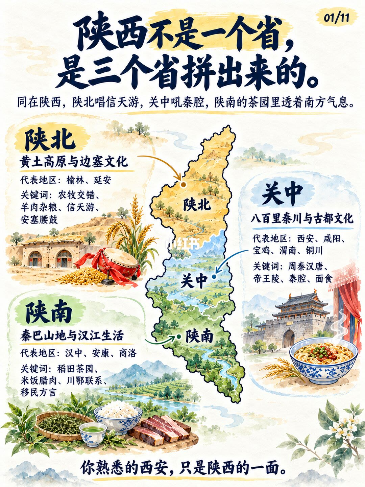
1/11陕西不是一个省，是三个省拼出来的：陕北信天游、关中秦腔、陕南茶园透南方气息。
Opening: Shaanxi as three stacked worlds—Shanbei, Guanzhong, Shannan.
你熟悉的西安，只是陕西的一面。
第 2 页：为何分成三块
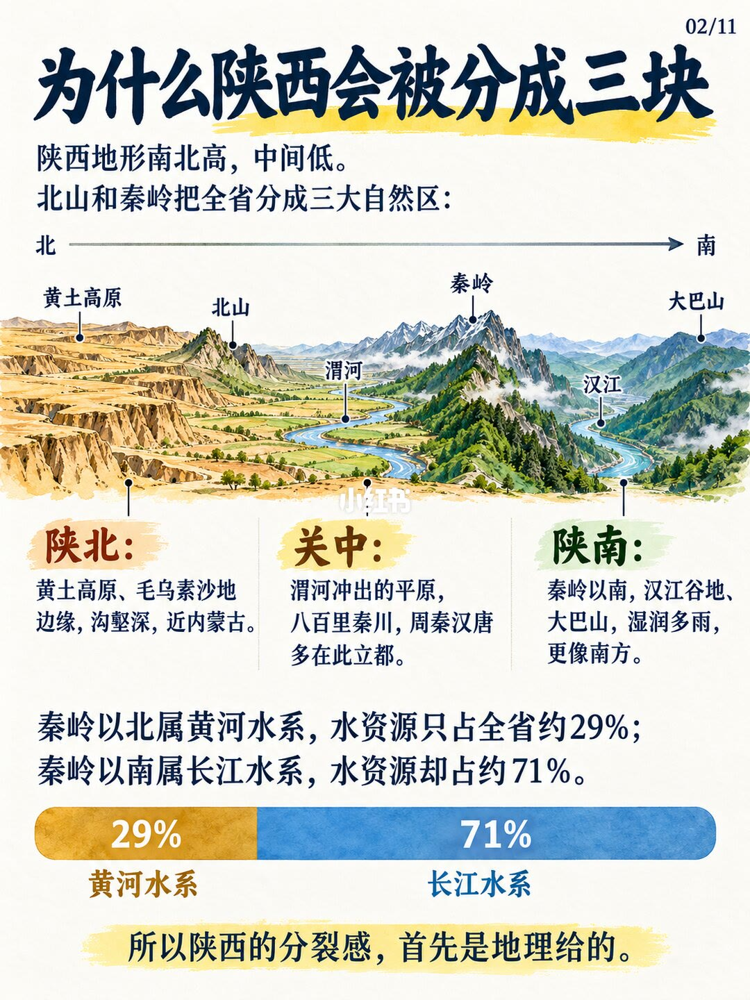
2/11北山与秦岭分出三大自然区；秦岭以北属黄河水系约29%水资源，以南属长江水系约71%。
Beishan + Qinling split three natural zones; water ~29% Yellow vs ~71% Yangtze south.
分裂感首先是地理给的。
第 3 页：陕北
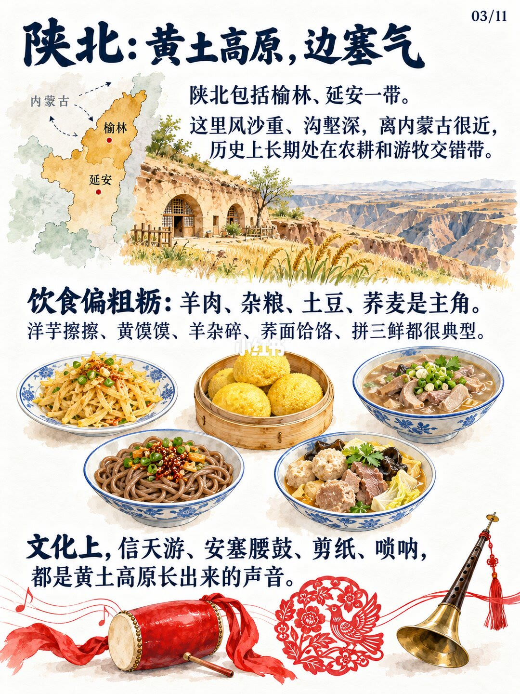
3/11陕北：黄土高原边塞气；榆林延安，羊肉杂粮，信天游安塞腰鼓剪纸唢呐。
Shanbei: loess frontier diet and sound—mutton, coarse grains, Xintianyou, waist drums.
农牧交错带塑造粗粝饮食与高原长出的声音。
第 4 页：关中
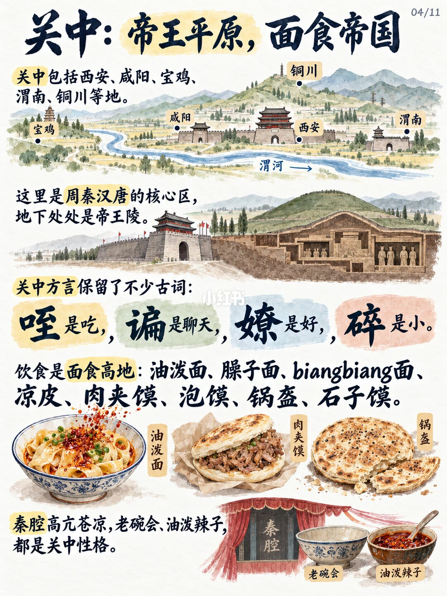
4/11关中：帝王平原，面食帝国；周秦汉唐+陵墓，咥谲嘹碎古词，油泼biangbiang肉夹馍。
Guanzhong: imperial plain + noodle empire; archaic dialect words and Qinqiang character.
面食高原与秦腔、老碗会、油泼辣子同构关中性格。
第 5 页：陕南
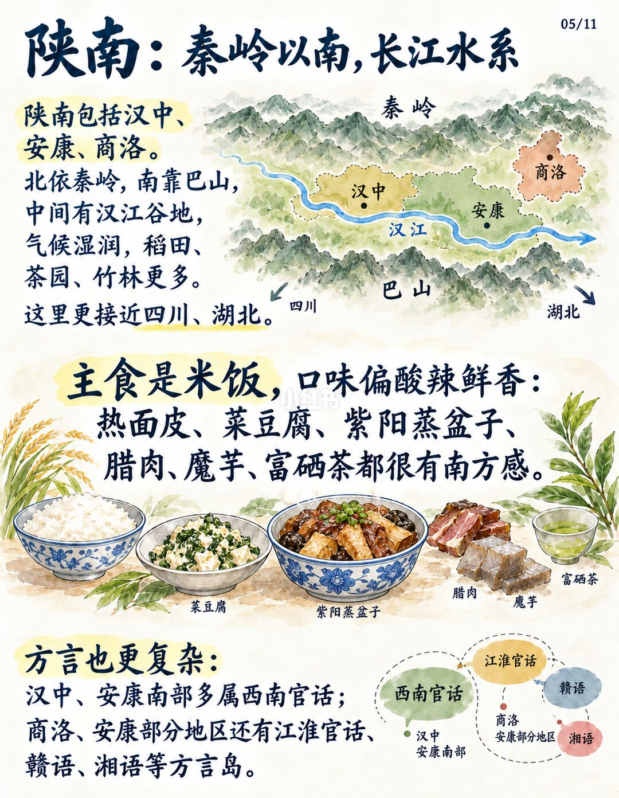
5/11陕南：秦岭以南长江水系；汉中安康商洛，米饭腊肉富硒茶，西南官话与方言岛。
Shannan: south of Qinling, Han River, rice/cured meat/tea, SW Mandarin + dialect islands.
地理与川鄂联系让陕南更像南方生活。
第 6 页：三种方言
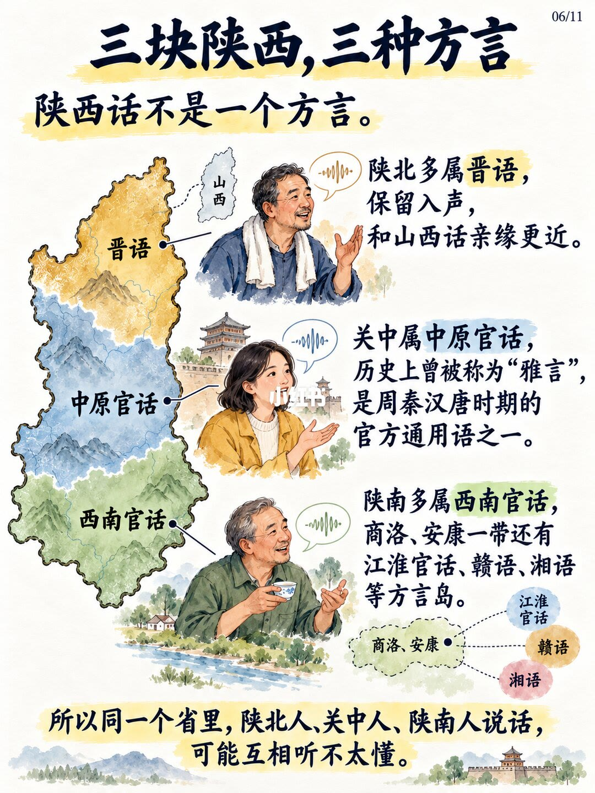
6/11三块陕西三种方言：陕北晋语留入声；关中中原官话曾称雅言；陕南多西南官话。
Three dialect stacks: Jin (entering tone), Central Plains Mandarin, Southwestern Mandarin.
同省人可能互相听不太懂。
第 7 页：移民拼装史
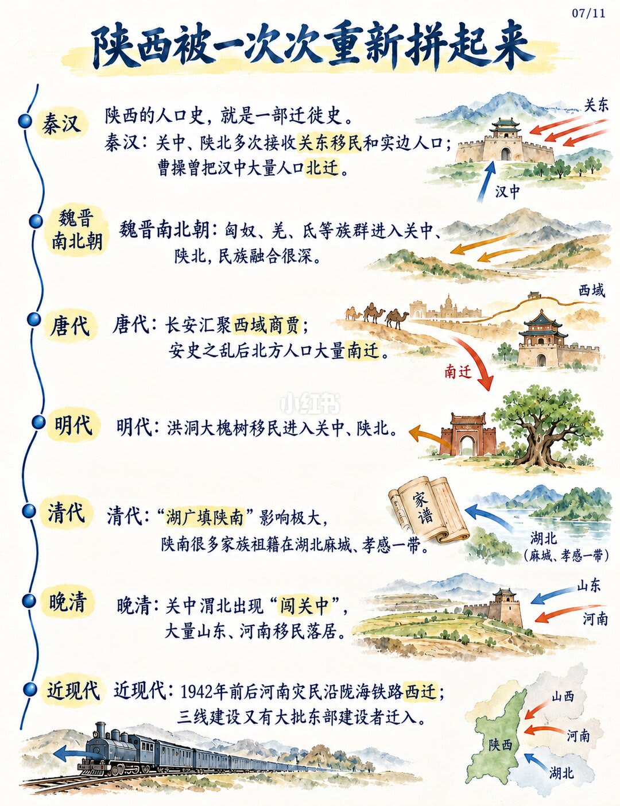
7/11陕西被一次次重新拼起来：秦汉迁徙、胡汉融合、唐代西市与南迁、洪洞大槐树、湖广填陕、闯关中与近代铁路移民。
Migration timeline: Qin–Han, Wei–Jin, Tang, Ming Hongtong, Qing Huguang, modern railways.
人口史=迁徙史，解释方言岛与习俗层。
第 8 页：三秦最初不含陕南
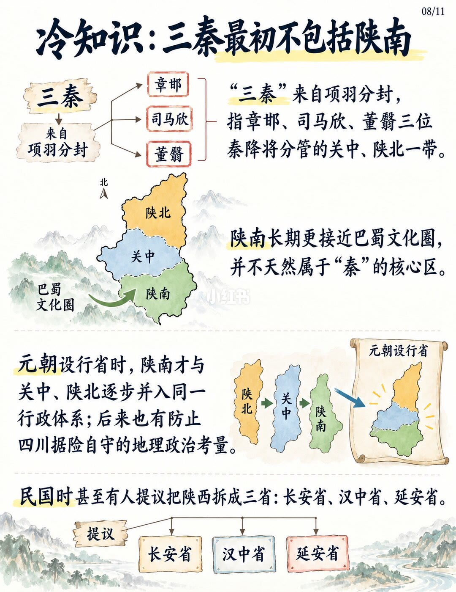
8/11冷知识：三秦最初不含陕南；元设行省合三块；民国曾议长安/汉中/延安三省。
“Three Qins” first covered Guanzhong+Shanbei; Yuan merged south; ROC once proposed three provinces.
行政拼合晚于地理文化分野。
第 9 页：北京时间在陕西
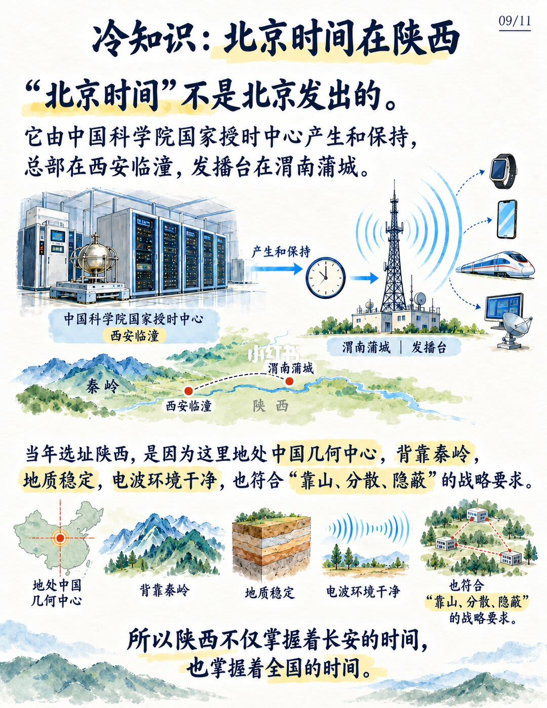
9/11冷知识：北京时间在陕西——国家授时中心临潼产生维护，渭南蒲城发播。
Beijing Time is kept in Shaanxi: NTSC Lintong + Pucheng transmitter.
几何中心、秦岭依托与电磁洁净满足战略选址。
第 10 页：走出去与走进来
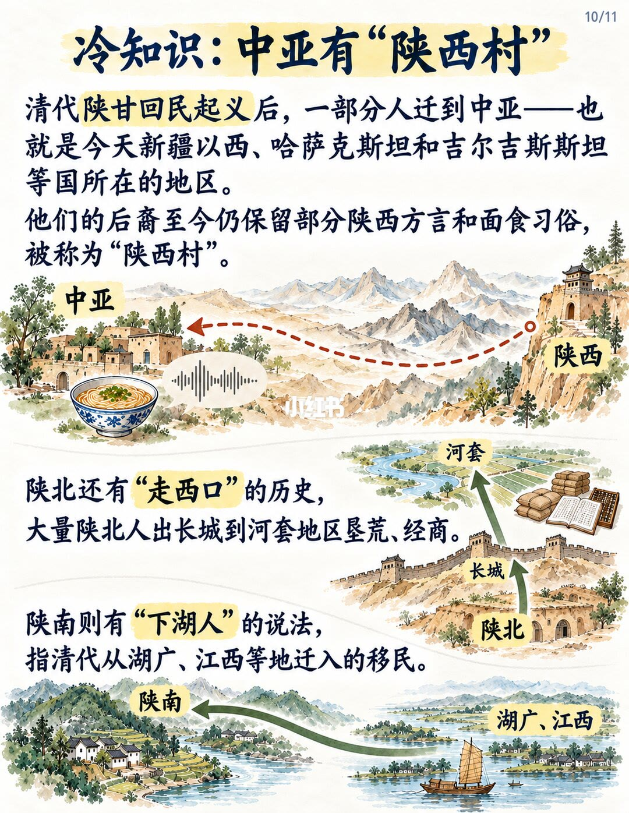
10/11冷知识：中亚有陕西村；陕北走西口；陕南「下湖人」来自湖广江西移民。
Out-migration to Central Asia & Hetao; in-migration “Xiahu” from Huguang/Jiangxi.
陕西既输出也吸纳人口。
第 11 页：三张餐桌
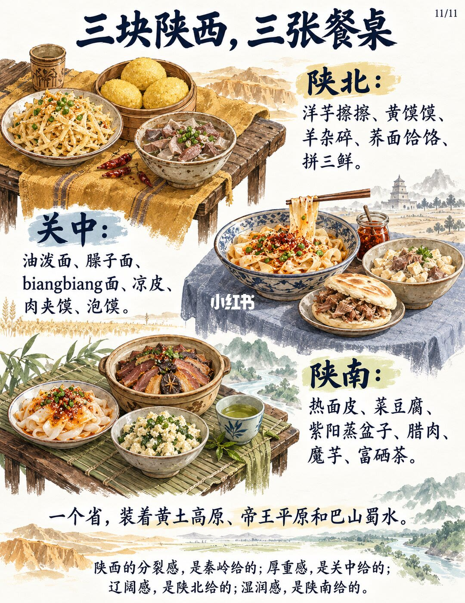
11/11三块陕西三张餐桌：陕北杂粮羊杂、关中油泼肉夹馍、陕南热面皮腊肉茶。
Three tables close the map: loess grains, Guanzhong noodles, Shannan rice–cured meat–tea.
分裂感是秦岭给的；厚重是关中，辽阔是陕北，湿润是陕南。
文末汇总
核心判断：陕西「散装」首先来自北山/秦岭与黄长江水系分野，再叠加晋语/中原官话/西南官话与多层移民；西安不能代表全省。
- 介绍陕西先问「哪一块」
- 用餐桌与方言验证地理切分
- 勿用兵马俑单点概括全省
以上为原笔记图文观点整理，不是对该主题的全面定论。